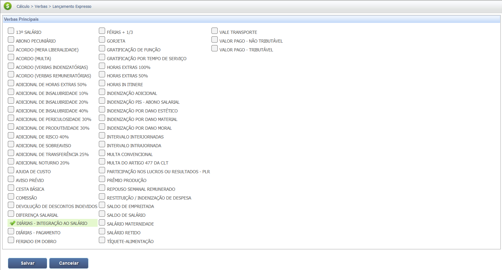
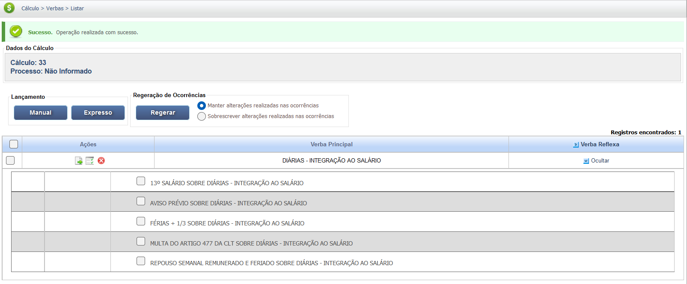
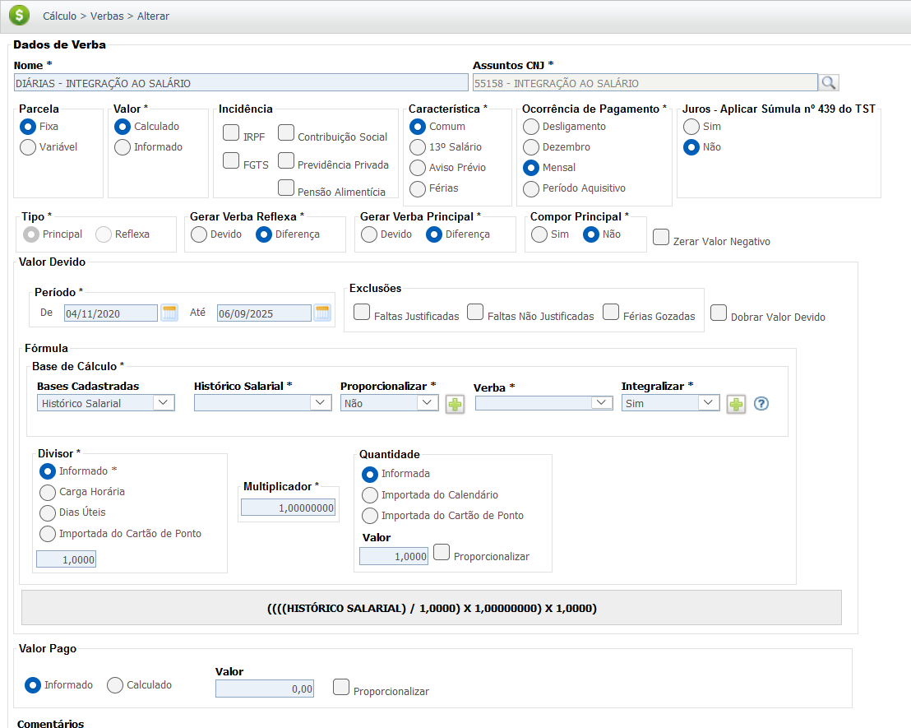
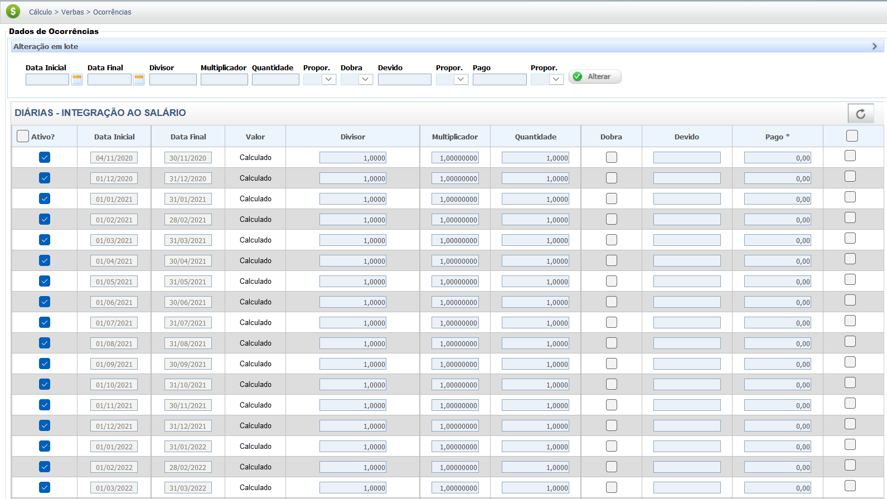
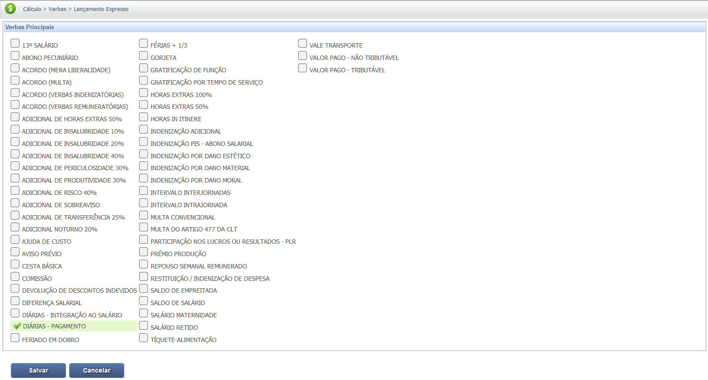
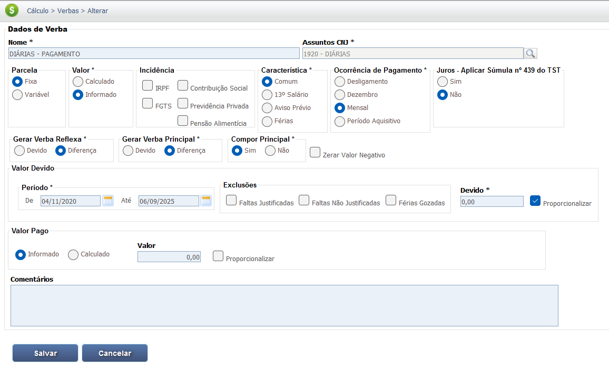
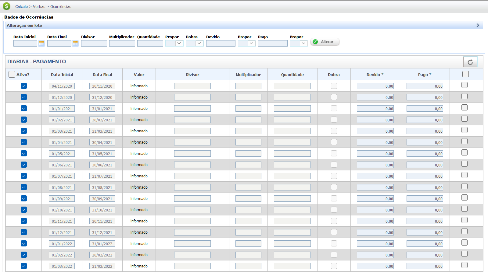

Diárias Trabalhistas
As diárias para viagem são valores pagos pelo empregador ao trabalhador para cobrir despesas de deslocamento, hospedagem e alimentação fora do local de trabalho. Sua natureza jurídica (salarial ou indenizatória) depende do seu valor em relação ao salário do empregado.
Natureza Jurídica (Diárias de Viagem)
1. Natureza Indenizável (Regra Geral)
Conforme Art. 457, §2º da CLT e Súmula 101 do TST. Não integra a remuneração.
- Valor total das diárias não excede 50% do salário.
- Natureza mantida mesmo se pagas habitualmente.
2. Natureza Salarial (Excedente)
Aplica-se ao valor que ultrapassar o limite de 50% do salário base do empregado.
- O excedente integra o salário para todos os fins.
- Em casos antigos, a descaracterização pode levar à integração total.
Aspectos Fundamentais das Diárias de Viagem:
A principal distinção no cálculo é se o valor total das diárias de viagem ultrapassa 50% do salário do empregado.
- Indenizatório: Não há reflexos em nenhuma verba acessória (até o limite de 50%).
- Salarial (porção): O valor que exceder 50% do salário integra a remuneração para todos os fins, conforme a Súmula 101 do TST.
Base Legal e Jurisprudência
O regime jurídico das Diárias de Viagem é determinado pela CLT e pela jurisprudência consolidada do TST, principalmente em relação ao limite de 50% do salário para a definição da natureza salarial.
Fontes Normativas
Consolidação das Leis do Trabalho (CLT):
-
Art. 457, §2º da CLT:
"Não se incluem nos salários as ajudas de custo, o auxílio-alimentação, vedado seu pagamento em dinheiro, as diárias para viagem, os prêmios e os abonos."
Jurisprudência
Súmula nº 101 do TST (Integração Salarial)
Súmula nº 101 do TST:
"Integram o salário, pelo seu valor total e para todos os efeitos legais, as diárias de viagem que excedam a 50% (cinquenta por cento) do salário do empregado, enquanto perdurarem as viagens."
*(Nota: Precedente fundamental para determinar a integração salarial e a base de cálculo de reflexos.)*
Base de Cálculo e Deduções
As Diárias de Viagem, se mantida sua natureza indenizatória (até 50% do salário), não integram a base de cálculo de nenhuma verba (salário, férias, 13º, FGTS, INSS e IRRF).
Cálculo da Porção Salarial das Diárias (Excedente a 50%)
O valor das diárias de viagem que exceder a 50% (cinquenta por cento) do salário do empregado integra o cálculo:
- O valor excedente a 50% entra como base de cálculo para os reflexos (13º, férias, etc.).
- Passa a incidir INSS e IRRF sobre a parcela salarial, devendo ser calculados os recolhimentos correspondentes.
Fórmula de Integração:
Valor Salarial = Valor Total das Diárias - (Salário Base x 50%). Se o resultado for positivo, este é o valor que integra o salário.
Verbas Reflexas
A parcela das Diárias de Viagem reconhecida como salarial (valor excedente a 50% do salário) gera reflexos sobre as verbas acessórias devidas ao empregado, retroativamente, pelo princípio da habitualidade.
Reflexos Comuns (em caso de integração salarial)
1. 13º Salário:
O valor salarial das Diárias, deve integrar o cálculo do 13º salário, na proporção de 1/12 por mês.
2. Férias e Terço Constitucional:
O valor salarial das Diárias deve compor a base de cálculo para as férias e o adicional de 1/3.
3. FGTS (Fundo de Garantia por Tempo de Serviço):
Se reconhecida a natureza salarial (o excedente a 50%), o empregador deverá recolher o FGTS (8%) sobre esse valor.
Calculadora (Simulação)
Esta seção seria utilizada para simular os reflexos salariais das Diárias de Viagem em casos de integração (excedente a 50% do salário).
Ferramenta de Simulação para Reflexos de Diárias de Viagem não implementada.
O cálculo depende do salário base do empregado e da apuração do valor total das diárias mês a mês para determinar o excedente que será integrado.
Lançamento no PJe-Calc: Diárias - Integração ao Salário
Para lançar corretamente as diárias que devem integrar o salário e seus reflexos no PJe-Calc, utilize a verba DIÁRIAS - INTEGRAÇÃO AO SALÁRIO" e siga os passos essenciais, ilustrados nas imagens:
-
1 - Verbas: Acesso e Lançamento
No menu lateral, clique em "Verbas" para iniciar o processo de cadastro e lançamento de valores.

-
2 - Lançamento da Verba Principal
Dentro da seção "Verbas", utilize a opção de "Lançamento Expresso" e selecione a rubrica "DIÁRIAS - INTEGRAÇÃO AO SALÁRIO" para inclusão no cálculo.
 -
3 - Verbas Reflexas
Após selecionar a verba e salvar/regerar, o sistema exibirá as verbas reflexas. Marque as verbas deferidas que devem receber o reflexo das Diárias (ex: 13º Salário sobre Diárias, Férias + 1/3 sobre Diárias).
 -
4 - Acesso aos Parâmetros da Verba
Na tela de listagem de verbas, clique em "Exibir" ou no ícone para acessar os "Parâmetros da Verba" da Diária - Integração ao Salário.
 -
5 - Configuração das Incidências e Base
Na tela de Parâmetros da Verba, configure o período de apuração, a base de cálculo (tipicamente Histórico Salarial ou Informada), e marque as incidências de IRPF, Contribuição Social (INSS) e FGTS, garantindo a natureza salarial da verba.
 -
6 - Acesso às Ocorrências
Retorne à listagem de verbas (ou prossiga para a próxima etapa) e acesse as "Ocorrências da Verba" para realizar o lançamento mensal dos valores.

-
7 - Lançamento dos Valores Mensais
Insira mês a mês os valores brutos das diárias devidas no campo "Valor" (se a base for "Informada") ou verifique os valores "Calculados" se a verba utilizar um multiplicador sobre o Histórico Salarial.

Lançamento no PJe-Calc: Diárias de Pagamento
A seguir, confira o passo a passo para o lançamento da verba "DIÁRIAS - PAGAMENTO" no PJe-Calc, utilizando a opção "Expresso":
-
Acessar Verbas e Escolher Lançamento: No menu de
navegação à esquerda, clique na opção Verbas para iniciar o lançamento. Após o
comando,
será exibida a tela para escolha do Lançamento da Verba. Escolha a opção Expresso.
- Seleção da Verba: O sistema abrirá as opções de verbas, escolha a verba Diárias e clique no botão Salvar 
-
Quadro de Verbas e Ações: O sistema exibirá um quadro
com os campos:
- Ações - contendo as opções de configurações da verba selecionada (parâmetros,
ocorrências e
exclusão)

-
- Parâmetros da Verba

-
- Ocorrências da Verba

-
- Excluir

- Verba Principal - verba selecionada para lançamento.
- Verba Reflexa - em que ao clicar no botão Exibir serão listadas todas as verbas reflexas ligadas a Verba Principal.
- Parametrização da Verba: Ao clicar no botão Parâmetros da Verba serão exibidas todas as configurações necessárias para a parametrização da Verba Principal. 
- Registro de Ocorrências: Ao clicar no botão Ocorrências da Verba serão exibidas todas as configurações necessárias para registro das ocorrências da Verba Principal. 